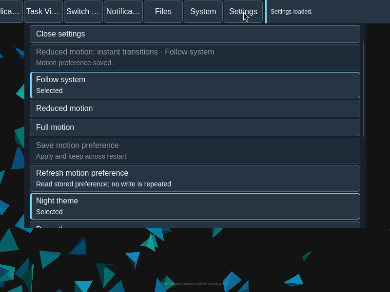
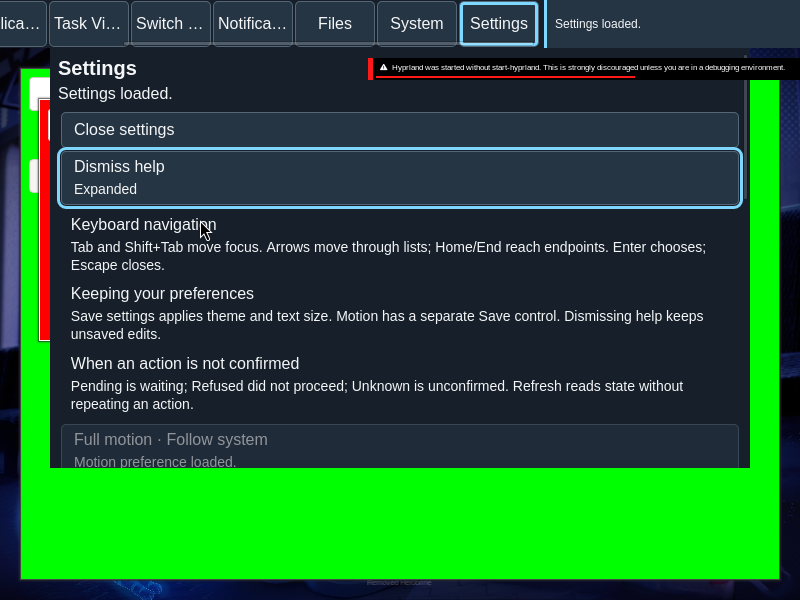

Motion, shortcuts and help
Set motion and shortcut preferences and read the keyboard help in Settings.
Overview
Set motion and shortcut preferences and read the keyboard help in Settings.
Anatomy
Settings offers Follow system, Reduced motion and Full motion. Shortcut choices cover Applications, System and Notifications, with Keep, Default and Alternative choices and availability details.
States
Saving a motion preference and applying motion are separate facts: a saved preference is not an application acknowledgement. Shortcut choices have their own save boundary and live binding observation.
Specimen
Real Elm interface. Simulated desktop. Client interiors are fixtures.
Behavior
Expand Show help for keyboard guidance. Save the relevant preference and check its status. Refresh reads current state; it does not automatically repeat a mutation.
Accessibility
Show help reveals inline keyboard guidance without moving the user away from Settings. Name each shortcut route and its available choices, and retain focus and readable status as help expands or text is enlarged. The selected preference and the keyboard focus indicator have separate meanings.
Content
Motion offers System, Reduce and Full. Saving the preference and receiving acknowledgement that the motion profile was applied are separate events. Shortcut routes offer Keep, Default or Alternate where the observed binding inventory permits them. If stored choices conflict with a draft, confirm each affected route before saving. Refresh reads stored preferences and live bindings; it does not repeat a write.
Evidence


Captures show the running interface; they are not simulated fixtures.
View Motion source on GitHub (external reference).